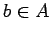
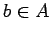
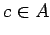
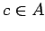

Inhalt Index DeskTop Bronstein

 Algebra und Diskrete Mathematik Mengenlehre Äquivalenz- und Ordnungsrelationen
Algebra und Diskrete Mathematik Mengenlehre Äquivalenz- und Ordnungsrelationen


Endliche geordnete Mengen werden durch HASSE-Diagramme dargestellt: Auf einer endlichen Menge A sei eine Ordnungsrelation  gegeben. Die Elemente von A werden als Punkte in der Ebene dargestellt, wobei der Punkt zu  oberhalb des Punktes zu
gegeben. Die Elemente von A werden als Punkte in der Ebene dargestellt, wobei der Punkt zu  oberhalb des Punktes zu  liegen soll, falls a<b gilt. Gibt es außerdem kein  mit a<c<b (man sagt, a und b sind benachbart), so werden a und b durch eine Strecke verbunden. Ein HASSE-Diagramm ist also ein ,,abgerüstetes`` Pfeildiagramm, bei dem alle Schlingen, Pfeilspitzen und alle Pfeile, die sich aus der Transitivität der Relation ergeben, weggelassen sind. In der linken Abbildung ist das Pfeildiagramm zur Teilbarkeitsrelation T auf der Menge A ={ 1,2,3,4} angegeben. Die Teilbarkeitsrelation T ist eine Ordnungsrelation und wird durch das HASSE-Diagramm in der rechten Abbildung dargestellt.
liegen soll, falls a<b gilt. Gibt es außerdem kein  mit a<c<b (man sagt, a und b sind benachbart), so werden a und b durch eine Strecke verbunden. Ein HASSE-Diagramm ist also ein ,,abgerüstetes`` Pfeildiagramm, bei dem alle Schlingen, Pfeilspitzen und alle Pfeile, die sich aus der Transitivität der Relation ergeben, weggelassen sind. In der linken Abbildung ist das Pfeildiagramm zur Teilbarkeitsrelation T auf der Menge A ={ 1,2,3,4} angegeben. Die Teilbarkeitsrelation T ist eine Ordnungsrelation und wird durch das HASSE-Diagramm in der rechten Abbildung dargestellt.